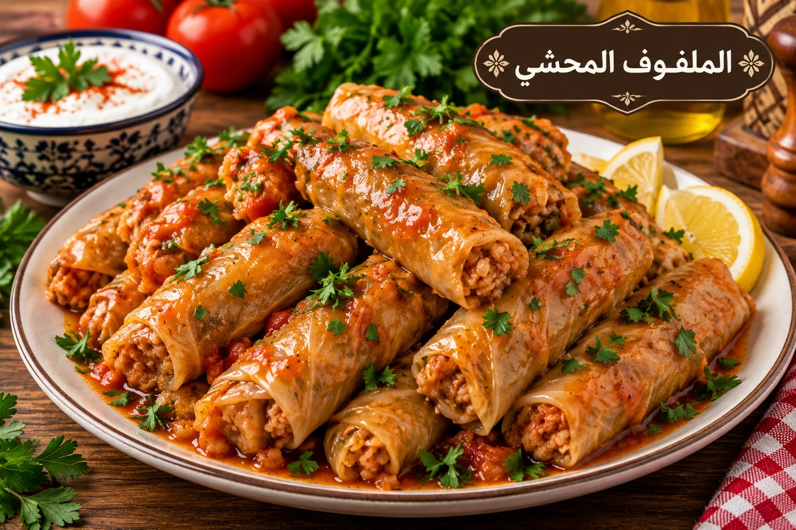

الملفوف المحشي
ملفوف محشي بالأرز واللحم

مقادير الملفوف المحشي
- 1 رأس ملفوف
- 2 كوب أرز قصير
- 300 غ لحم مفروم
- 1½ ملعقة صغيرة ملح
- 1 ملعقة صغيرة بهار مشكل
- ½ ملعقة صغيرة فلفل أسود
- 5 أكواب مرق
- 6 فصوص ثوم
طريقة عمل الملفوف المحشي
- افصلي أوراق الملفوف واسلقيها دقائق حتى تلين ثم أزيلي العرق السميك.
- اخلطي الأرز المغسول باللحم والملح والبهارات.
- ضعي كمية صغيرة من الحشوة ولفي الأوراق بإحكام من دون ضغط زائد.
- رصي اللفائف في القدر مع الثوم وأضيفي المرق الساخن.
- بعد الغليان خففي النار واطهي نحو 60 دقيقة ثم أريحيه 10 دقائق.